#Loading the relevant libraries
library(ggplot2)
library(gridExtra)
library(gghighlight)
library(Lahman)Lab 5: Statistics
The Normal Distribution
There are four functions in R for calculating normal distributions: rnorm, pnorm, qnorm, dnorm.
1 Generating Random Values in a Standard Normal Distribution (mean: 0, sd:1)
The rnorm function generates a vector of normally distributed random numbers. We can specify the mean \(\mu\) and the standard deviation \(\sigma\). Remember that that for a standard normal distribution the mean \(\mu = 0\) and the standard deviation \(\sigma = 1\).
Let us see how it works by creating three samples with 10, 100, and 1000 observations.
1.1 Creating a sample of 10 observations
#Step1: Creating 10 obs. with mean 0 and sd of 1
generated_data_10obs<-rnorm(10, mean=0, sd=1)
#Step2: Turning the created data into a data frame
generated_data_10obs<-data.frame(generated_data_10obs)
#Step3: Inspecting the first 10 obs.
head(generated_data_10obs, n=10) generated_data_10obs
1 -0.7591396
2 -0.9642605
3 -1.0563871
4 0.2285063
5 0.4157409
6 -0.7915110
7 -0.7639864
8 -1.1858144
9 -0.9984669
10 0.6434722#Step4: Renaming variable inside the datafarme
names(generated_data_10obs)<-"value"
head(generated_data_10obs, n=10) value
1 -0.7591396
2 -0.9642605
3 -1.0563871
4 0.2285063
5 0.4157409
6 -0.7915110
7 -0.7639864
8 -1.1858144
9 -0.9984669
10 0.6434722#Step5: Plotting the data
figure_1<-ggplot(data = generated_data_10obs, aes(x=value))+
geom_histogram()+
theme_bw()
figure_1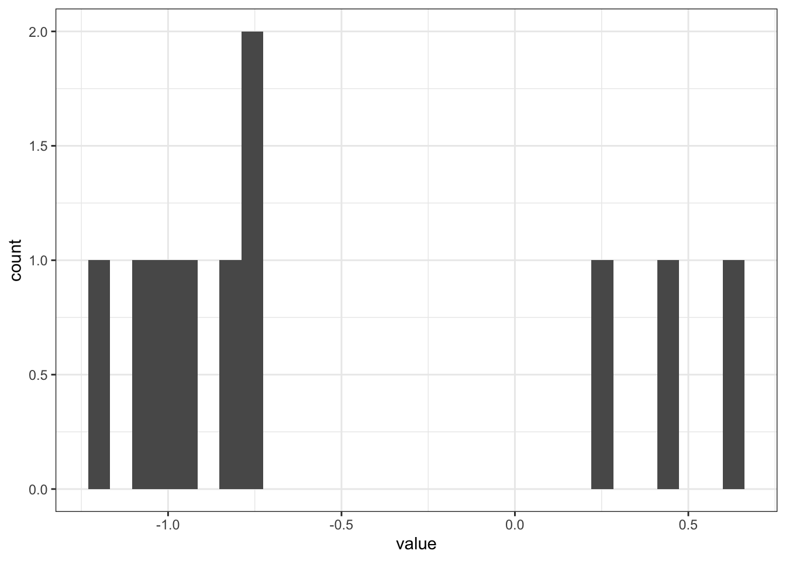
1.2 Creating a sample of 100 observations
#Step1: Creating 100 obs. with mean 0 and sd of 1
generated_data_100obs<-rnorm(100, mean=0, sd=1)
#Step2: Turning the created data into a data frame
generated_data_100obs<-data.frame(generated_data_100obs)
#Step3: Inspecting the first 10 obs.
head(generated_data_100obs, n=10) generated_data_100obs
1 -0.21519218
2 -0.23216122
3 0.60530442
4 -0.26970155
5 0.01577164
6 1.41626398
7 -0.93698206
8 -0.81258634
9 1.17808130
10 0.15573457#Step4: Renaming variable inside the datafarme
names(generated_data_100obs)<-"value"
head(generated_data_100obs, n=10) value
1 -0.21519218
2 -0.23216122
3 0.60530442
4 -0.26970155
5 0.01577164
6 1.41626398
7 -0.93698206
8 -0.81258634
9 1.17808130
10 0.15573457#Step5: Plotting the data
figure_2<-ggplot(data = generated_data_100obs, aes(x=value))+
geom_histogram()+
theme_bw()
figure_2`stat_bin()` using `bins = 30`. Pick better value with `binwidth`.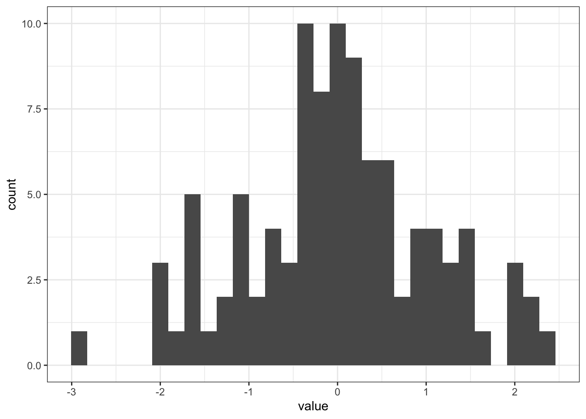
1.3 Creating a sample of 1000 observations
#Step1: Creating 1000 obs. with mean 0 and sd of 1
generated_data_1000obs<-rnorm(1000, mean=0, sd=1)
#Step2: Turning the created data into a data frame
generated_data_1000obs<-data.frame(generated_data_1000obs)
#Step3: Inspecting the first 10 obs.
head(generated_data_1000obs, n=10) generated_data_1000obs
1 -0.3149645
2 -1.6320820
3 -0.6890553
4 -0.3226420
5 1.2308166
6 0.1475667
7 -0.1115958
8 1.2591577
9 -0.6382228
10 0.4299800#Step4: Renaming variable inside the datafarme
names(generated_data_1000obs)<-"value"
head(generated_data_1000obs, n=10) value
1 -0.3149645
2 -1.6320820
3 -0.6890553
4 -0.3226420
5 1.2308166
6 0.1475667
7 -0.1115958
8 1.2591577
9 -0.6382228
10 0.4299800#Step5: Plotting the data
figure_3<-ggplot(data = generated_data_1000obs, aes(x=value))+
geom_histogram()+
theme_bw()
figure_3`stat_bin()` using `bins = 30`. Pick better value with `binwidth`.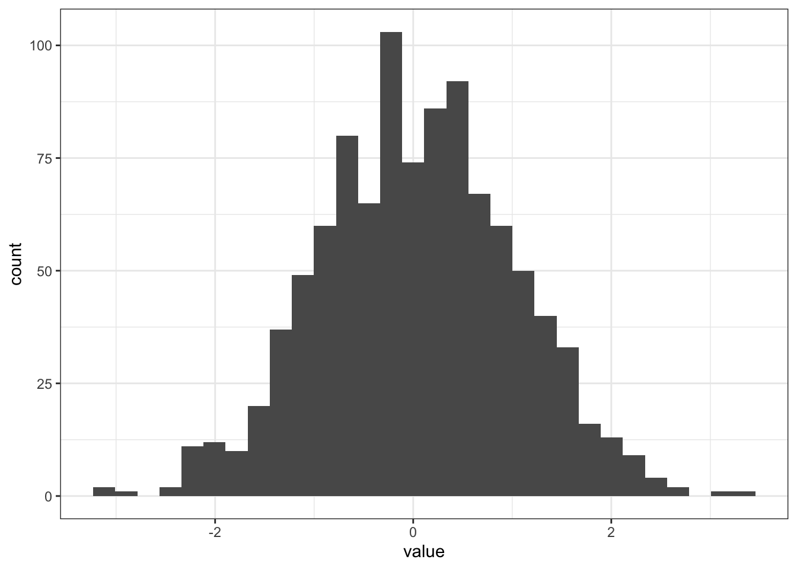
1.4 Comparing the distribution of the three different samples
new_fig<-grid.arrange(figure_1, figure_2, figure_3, ncol=3)`stat_bin()` using `bins = 30`. Pick better value with `binwidth`.
`stat_bin()` using `bins = 30`. Pick better value with `binwidth`.
`stat_bin()` using `bins = 30`. Pick better value with `binwidth`.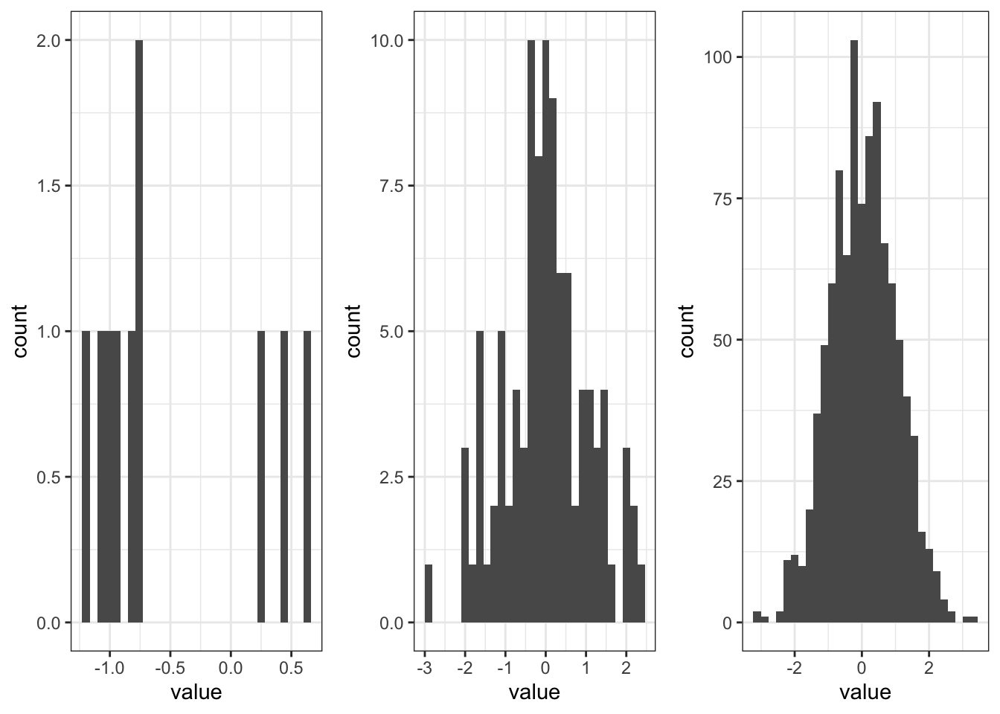
2 Generating the cumulative distribution function (CDF) for a standard normal distribution
The pnorm function generates a vector for a cumulative distribution function of the normal distribution. We can specify the mean \(\mu\) and the standard deviation \(\sigma\). The pnorm will return the probability that the randomly generated variable X takes on a value less than or equal to x:
\(F_X(x) = P (X\leq x)\)
2.1 Sequence from -3 to 3
#99% of a normal distribution falls between -3 and 3
list_seq<-seq(-3, 3, by =0.01)
dummy_df<-pnorm(list_seq, mean = 0, sd = 1)
dummy_df<-data.frame(dummy_df)
names(dummy_df)<-"y"
dummy_df2<-cbind(dummy_df, list_seq)figure_4<-ggplot()+
geom_step(data=dummy_df2, mapping=aes(x=list_seq, y=y)) +
geom_bar(stat="identity")+
theme_bw()+
ggtitle("Sequence: -3, 3")
figure_4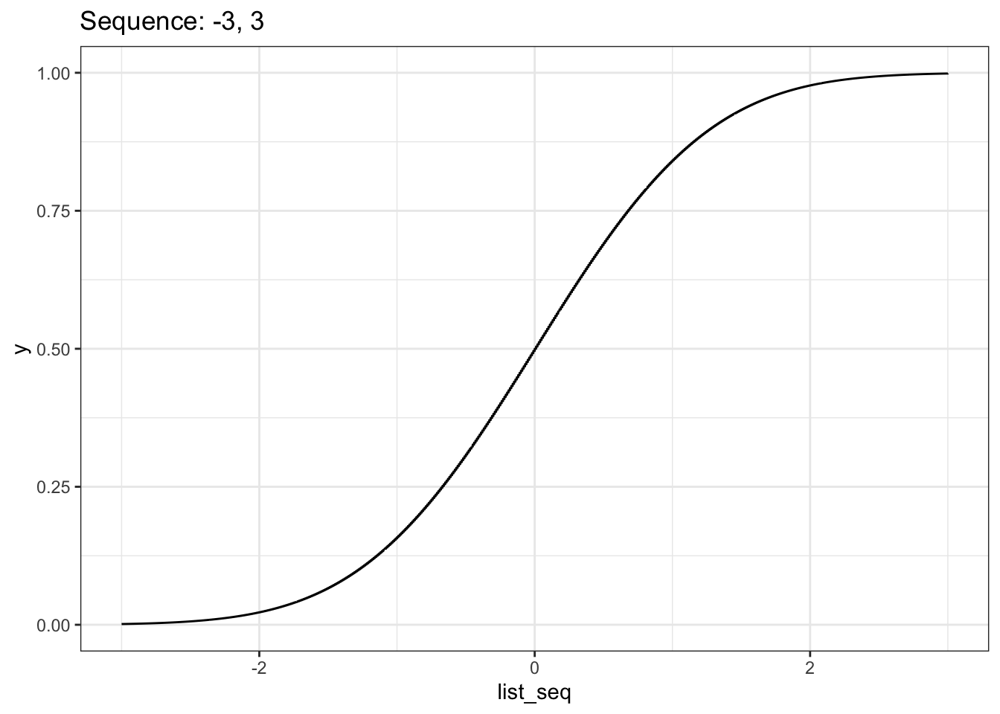
2.2 Highlighting probabilities
This will return the probability that the randomly generated variable X takes on a value less than or equal to -1.
fig4b<-ggplot(data=dummy_df2, aes(list_seq, y)) +
geom_area(fill = "green") +
gghighlight(list_seq < -1)+
theme_bw()
fig4b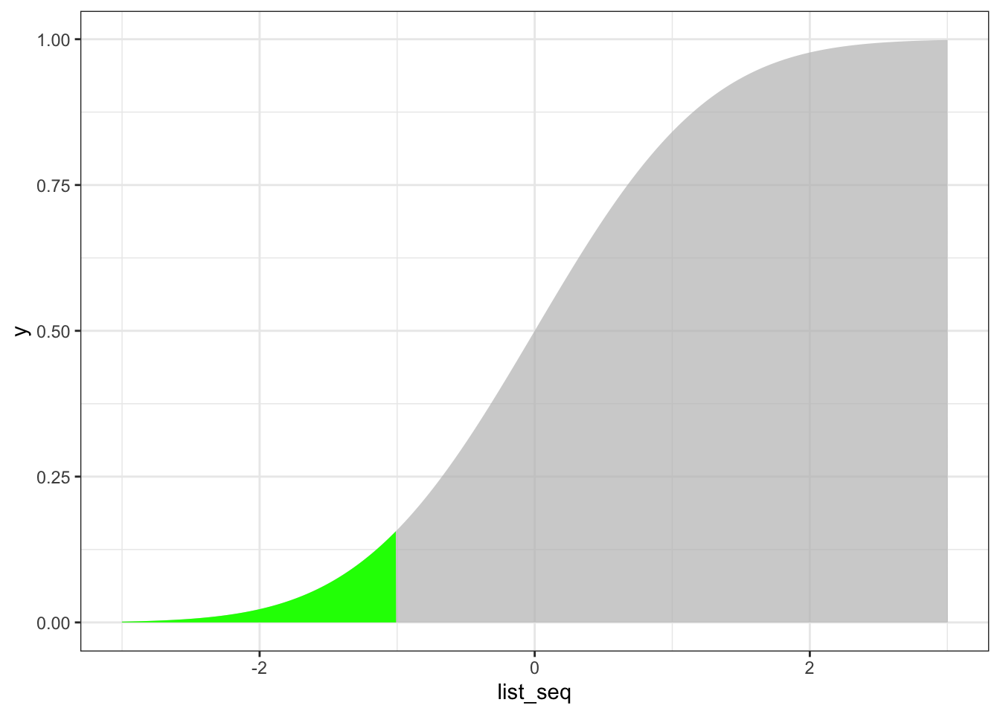
This will return the probability that the randomly generated variable X takes on a value less than or equal to 2.
fig4c<-ggplot(data=dummy_df2, aes(list_seq, y)) +
geom_area(fill = "green") +
gghighlight(list_seq < 2)+
theme_bw()
fig4c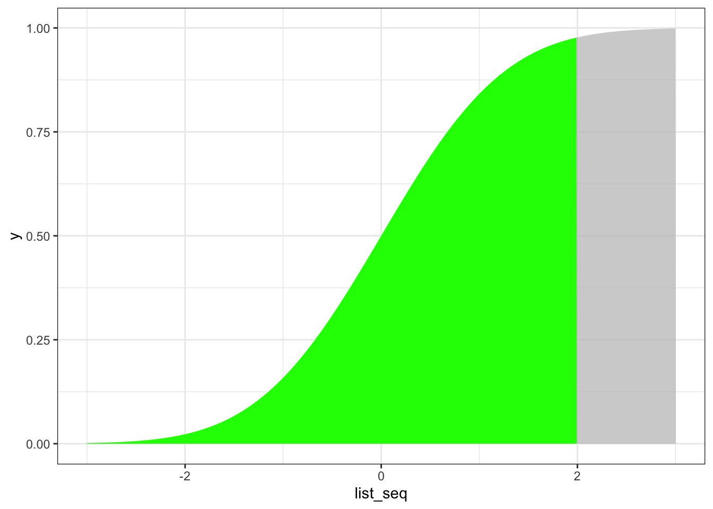
2.3 Sequence from -10 to 10
#99% of a normal distribution falls between -3 and 3
list_seq<-seq(-10, 10, by =0.01)
dummy_df<-pnorm(list_seq, mean = 0, sd = 1)
dummy_df<-data.frame(dummy_df)
names(dummy_df)<-"y"
dummy_df2<-cbind(dummy_df, list_seq)figure_5<-ggplot()+
geom_step(data=dummy_df2, mapping=aes(x=list_seq, y=y)) +
geom_bar(stat="identity")+
theme_bw()+
ggtitle("Sequence: -10, 10")
figure_5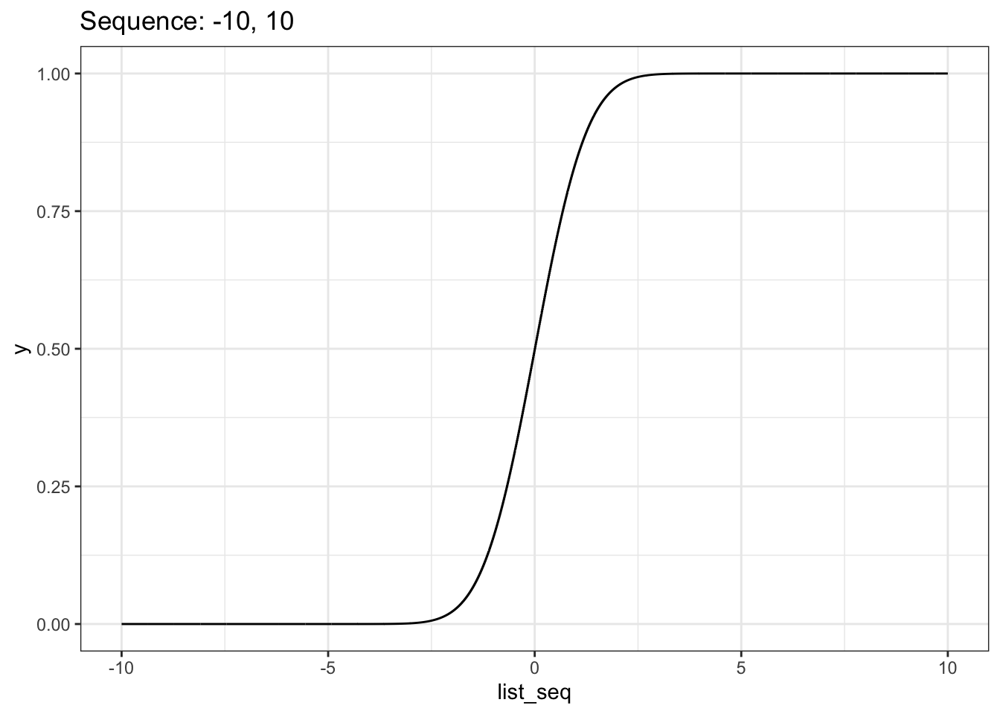
Comparing the two CDFs
new_fig<-grid.arrange(figure_4, figure_5, ncol=2)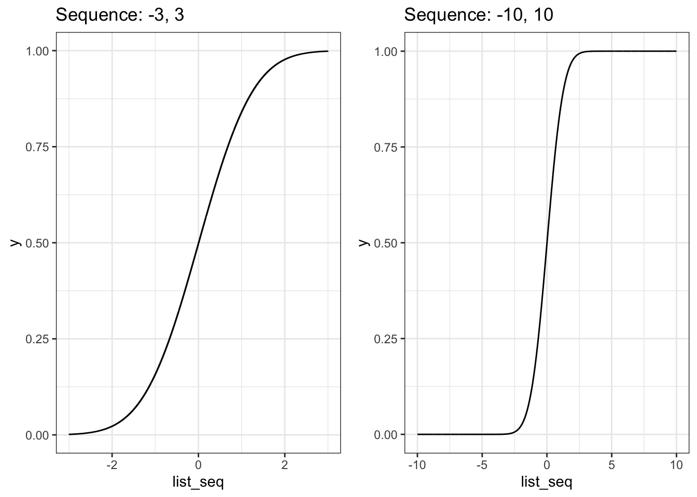
2.4 Changing size of the randomly generated variable X: increments of 1
list_seq<-seq(-3, 3, by =1)
dummy_df<-pnorm(list_seq, mean = 0, sd = 1)
dummy_df<-data.frame(dummy_df)
names(dummy_df)<-"y"
dummy_df2<-cbind(dummy_df, list_seq)figure_6<-ggplot()+
geom_step(data=dummy_df2, mapping=aes(x=list_seq, y=y)) +
geom_bar(stat="identity")+
theme_bw()+
ggtitle("Sequence: -3, 3\n by 1")
figure_6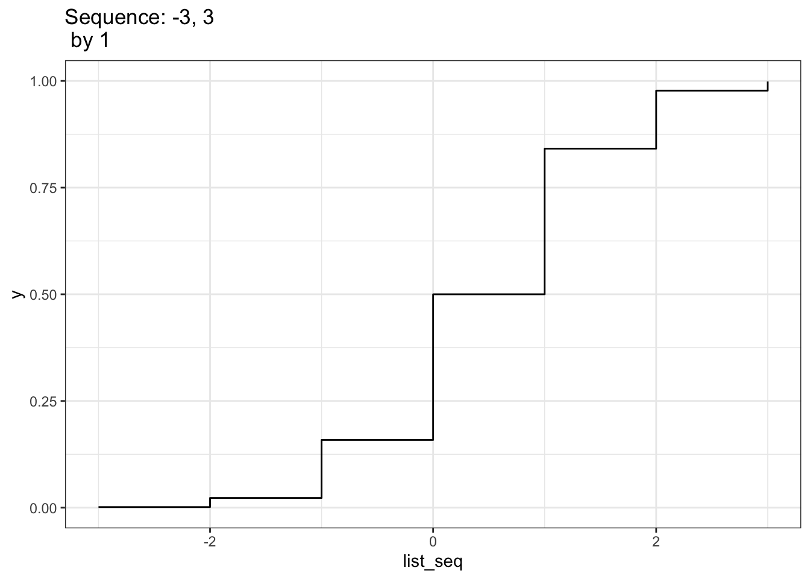
2.5 Changing size of the randomly generated variable X: increments of 0.1
list_seq<-seq(-3, 3, by =0.1)
dummy_df<-pnorm(list_seq, mean = 0, sd = 1)
dummy_df<-data.frame(dummy_df)
names(dummy_df)<-"y"
dummy_df2<-cbind(dummy_df, list_seq)figure_7<-ggplot()+
geom_step(data=dummy_df2, mapping=aes(x=list_seq, y=y)) +
geom_bar(stat="identity")+
theme_bw()+
ggtitle("Sequence: -3, 3\n by 0.1")
figure_7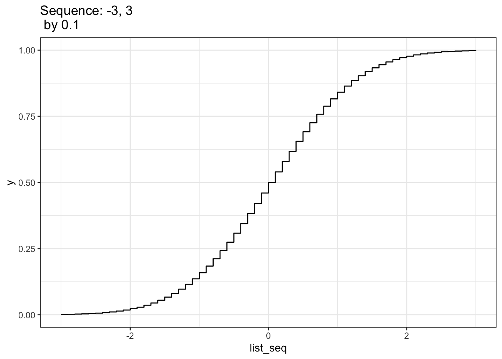
2.6 Changing size of the randomly generated variable X: increments of 0.01
list_seq<-seq(-3, 3, by =0.01)
dummy_df<-pnorm(list_seq, mean = 0, sd = 1)
dummy_df<-data.frame(dummy_df)
names(dummy_df)<-"y"
dummy_df2<-cbind(dummy_df, list_seq)figure_8<-ggplot()+
geom_step(data=dummy_df2, mapping=aes(x=list_seq, y=y)) +
geom_bar(stat="identity")+
theme_bw()+
ggtitle("Sequence: -3, 3\n by 0.01")
figure_8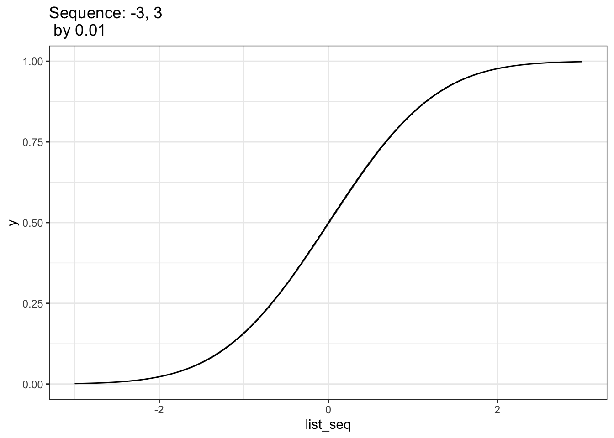
2.7 Visualizing the results
grid.arrange(figure_6, figure_7, figure_8, ncol=3)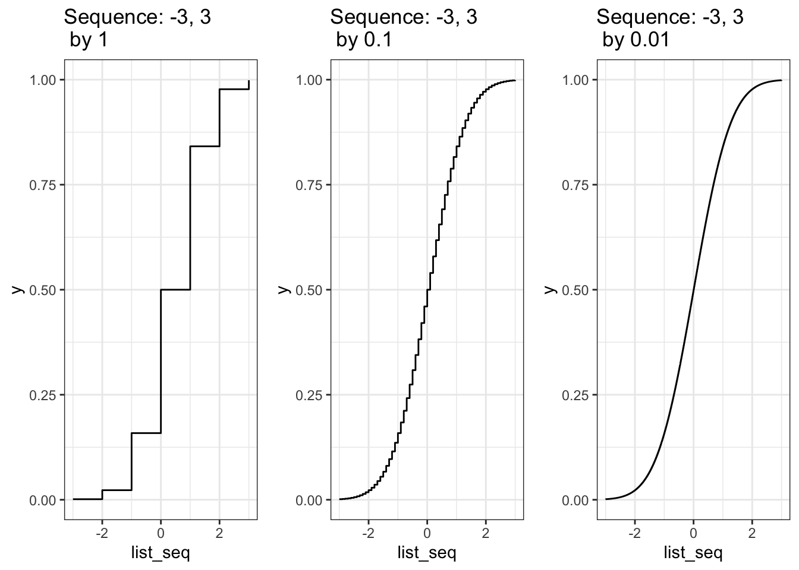
3 Generating the inverse of cumulative distribution function (CDF) for a standard normal distribution
The qnorm function generates a vector for the inverse cumulative distribution function of the normal distribution with a mean \(\mu\) and a standard deviation \(\sigma\). It returns the value x such that pnorm(x, \(\mu\), \(\sigma\)) = p
\(P(X\leq x) = F_X(x)\)
Let’s use the same data. First let us examine what we created previously.
head(dummy_df2, n = 10) y list_seq
1 0.001349898 -3.00
2 0.001394887 -2.99
3 0.001441242 -2.98
4 0.001488999 -2.97
5 0.001538195 -2.96
6 0.001588870 -2.95
7 0.001641061 -2.94
8 0.001694810 -2.93
9 0.001750157 -2.92
10 0.001807144 -2.91Because qnorm works in the opposite direction, we will use the probabilities (that the randomly generated variable X takes on a value less than or equal to x) to recreate the values in our sequence
list_seq2<-dummy_df2$y
dummy_df_q<-qnorm(list_seq2, mean = 0, sd = 1)
dummy_df_q<-data.frame(dummy_df_q)
names(dummy_df_q)<-"q"
dummy_df_q2<-cbind(dummy_df_q, list_seq2)Let us now inspect the output
head(dummy_df_q2, n=10) q list_seq2
1 -3.00 0.001349898
2 -2.99 0.001394887
3 -2.98 0.001441242
4 -2.97 0.001488999
5 -2.96 0.001538195
6 -2.95 0.001588870
7 -2.94 0.001641061
8 -2.93 0.001694810
9 -2.92 0.001750157
10 -2.91 0.001807144This looks very familiar. Let us now compare it to the previous dataset
head(dummy_df2, n=10) y list_seq
1 0.001349898 -3.00
2 0.001394887 -2.99
3 0.001441242 -2.98
4 0.001488999 -2.97
5 0.001538195 -2.96
6 0.001588870 -2.95
7 0.001641061 -2.94
8 0.001694810 -2.93
9 0.001750157 -2.92
10 0.001807144 -2.91head(dummy_df_q2, n=10) q list_seq2
1 -3.00 0.001349898
2 -2.99 0.001394887
3 -2.98 0.001441242
4 -2.97 0.001488999
5 -2.96 0.001538195
6 -2.95 0.001588870
7 -2.94 0.001641061
8 -2.93 0.001694810
9 -2.92 0.001750157
10 -2.91 0.0018071444 Generating the probability density function (PDF) for a standard normal distribution
The dnorm function generates a vector for a probability density function of the normal distribution. We can specify the mean \(\mu\) and the standard deviation \(\sigma\).
dnorm(x, \(\mu\), \(\sigma\)) - probability density function of the normal distribution with mean \(\mu\) and standard deviation \(\sigma\)
list_seq<-seq(-3, 3, by =0.01)
dnorm_df<-dnorm(list_seq, mean = 0, sd = 1)
dnorm_df<-data.frame(dnorm_df)
names(dnorm_df)<-"value"
dnorm_df2<-cbind(dnorm_df, list_seq)figure_8<-ggplot()+
geom_step(data=dnorm_df, mapping=aes(y=value, x=list_seq)) +
geom_bar(stat="identity")+
theme_bw()
figure_8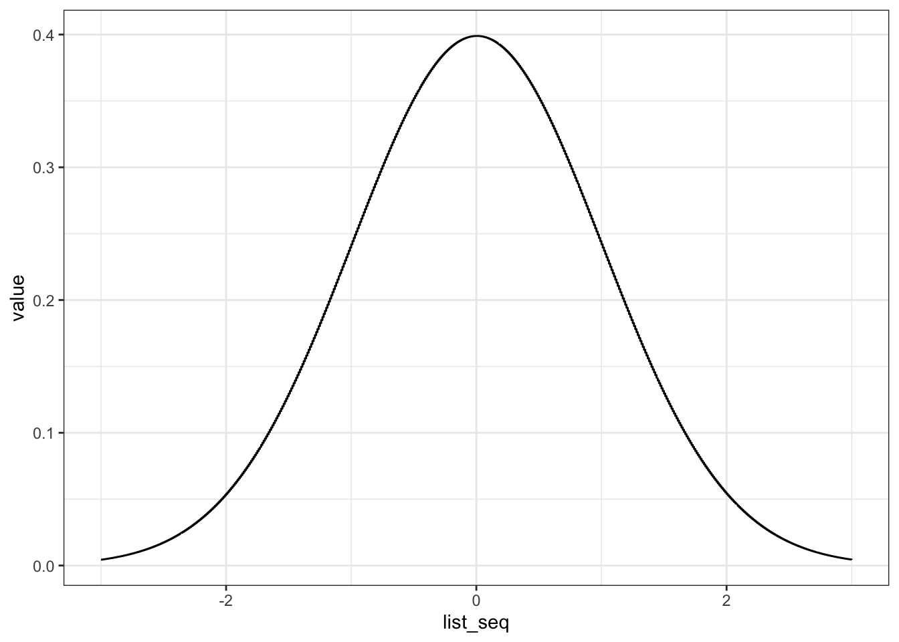
Let us see how changing some of these parameters may affect the appearance of our bell curve
4.1 Sequence from -3 to 3
list_seq<-seq(-3, 3, by =0.01)
dnorm_df_3<-dnorm(list_seq, mean = 0, sd = 1)
dnorm_df_3<-data.frame(dnorm_df_3)
names(dnorm_df_3)<-"value"
dnorm_df_3_b<-cbind(dnorm_df_3, list_seq)figure_8<-ggplot()+
geom_step(data=dnorm_df_3_b, mapping=aes(y=value, x=list_seq)) +
geom_bar(stat="identity")+
theme_bw()+
ggtitle("Sequence from -3 to 3")
figure_8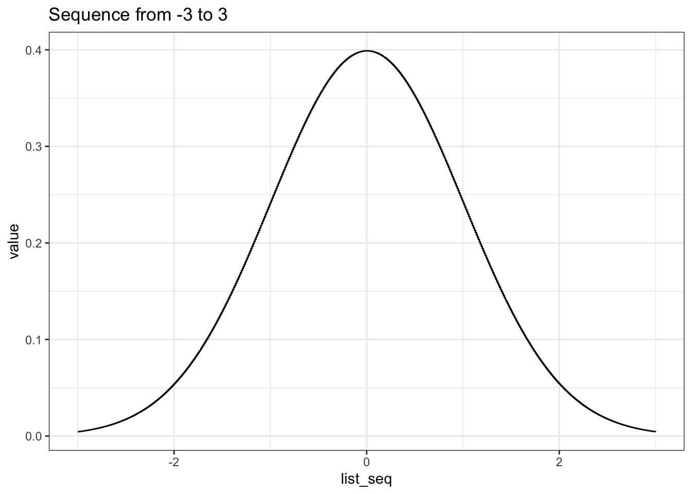
4.2 Sequence from -10 to 10
list_seq<-seq(-10, 10, by =0.01)
dnorm_df_10<-dnorm(list_seq, mean = 0, sd = 1)
dnorm_df_10<-data.frame(dnorm_df_10)
names(dnorm_df_10)<-"value"
dnorm_df_10_b<-cbind(dnorm_df_10, list_seq)figure_9<-ggplot()+
geom_step(data=dnorm_df_10_b, mapping=aes(y=value, x=list_seq)) +
geom_bar(stat="identity")+
theme_bw()+
ggtitle("Sequence from -10 to 10")
figure_9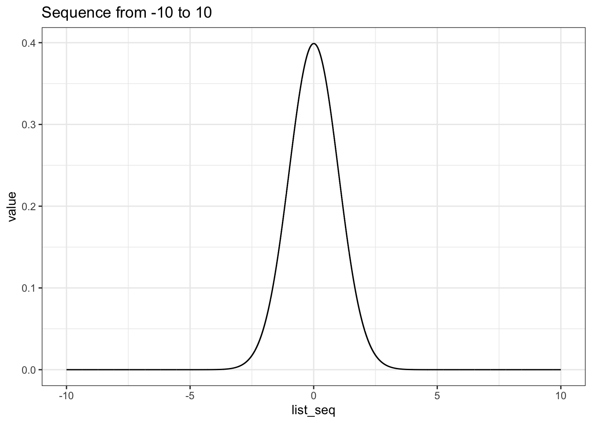
Comparing them
grid.arrange(figure_8, figure_9, ncol=2)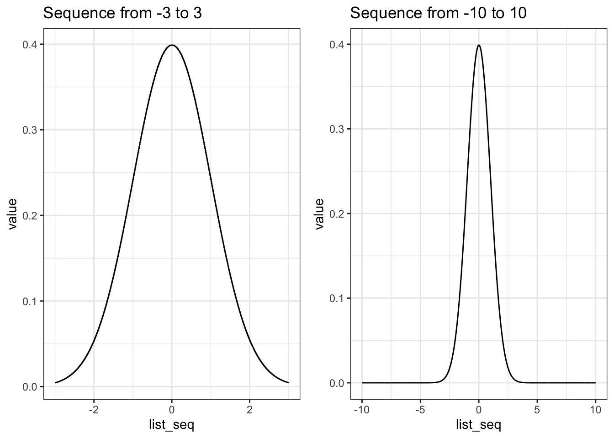
Let us see what happens if we change the increment
list_seq<-seq(-3, 3, by =0.01)
dnorm_df_inc3<-dnorm(list_seq, mean = 0, sd = 1)
dnorm_df_inc3<-data.frame(dnorm_df_inc3)
names(dnorm_df_inc3)<-"value"
dnorm_df_inc3_b<-cbind(dnorm_df_inc3, list_seq)
figure_10<-ggplot()+
geom_step(data=dnorm_df_inc3_b, mapping=aes(y=value, x=list_seq)) +
geom_bar(stat="identity")+
theme_bw()+
ggtitle("Increments of 0.01")
figure_10list_seq<-seq(-3, 3, by =0.1)
dnorm_df_inc3<-dnorm(list_seq, mean = 0, sd = 1)
dnorm_df_inc3<-data.frame(dnorm_df_inc3)
names(dnorm_df_inc3)<-"value"
dnorm_df_inc3_b<-cbind(dnorm_df_inc3, list_seq)
figure_11<-ggplot()+
geom_step(data=dnorm_df_inc3_b, mapping=aes(y=value, x=list_seq)) +
geom_bar(stat="identity")+
theme_bw()+
ggtitle("Increments of 0.1")
figure_11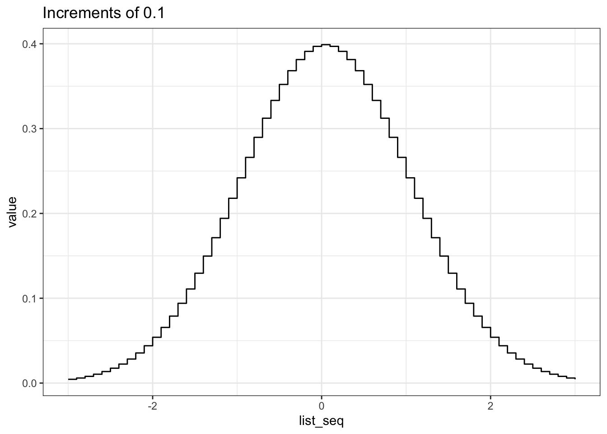
list_seq<-seq(-3, 3, by =1)
dnorm_df_inc3<-dnorm(list_seq, mean = 0, sd = 1)
dnorm_df_inc3<-data.frame(dnorm_df_inc3)
names(dnorm_df_inc3)<-"value"
dnorm_df_inc3_b<-cbind(dnorm_df_inc3, list_seq)
figure_12<-ggplot()+
geom_step(data=dnorm_df_inc3_b, mapping=aes(y=value, x=list_seq)) +
geom_bar(stat="identity")+
theme_bw()+
ggtitle("Increments of 1")
figure_12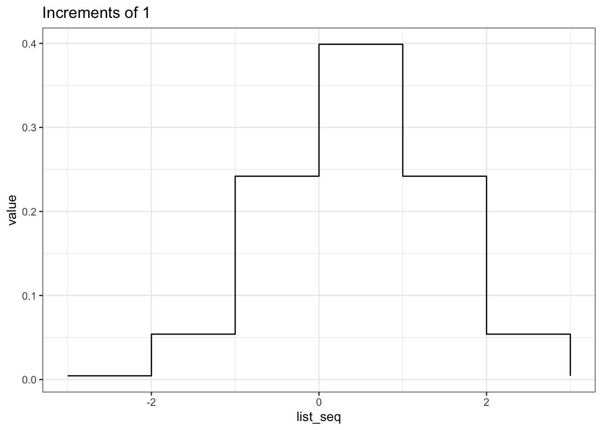
Comparing them
grid.arrange(figure_10, figure_11, figure_12, ncol=3)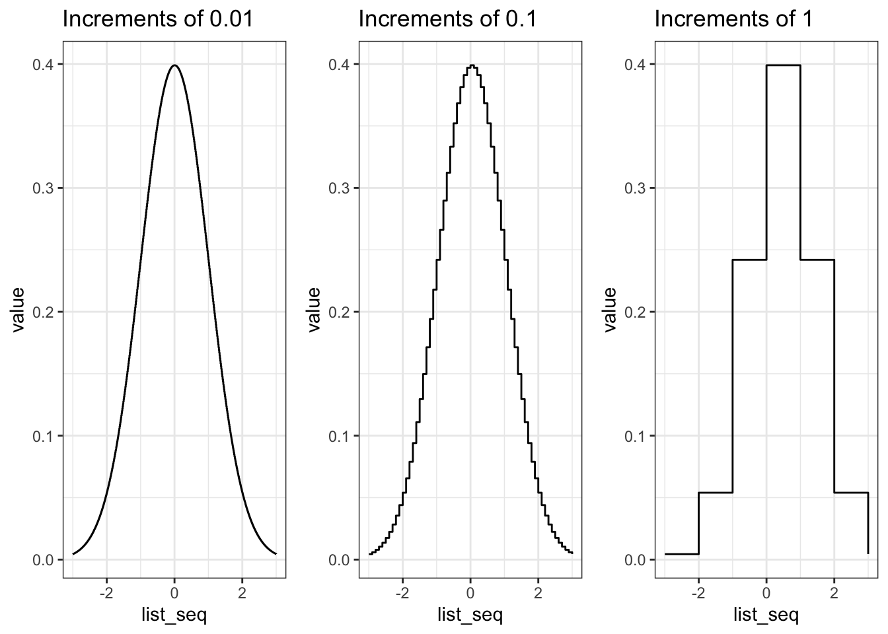
Let’s do some problems now.
5 Normal vs. Non-Normal Distributions
As you might suspect, life expectancy in our dataset is not normally distributed.
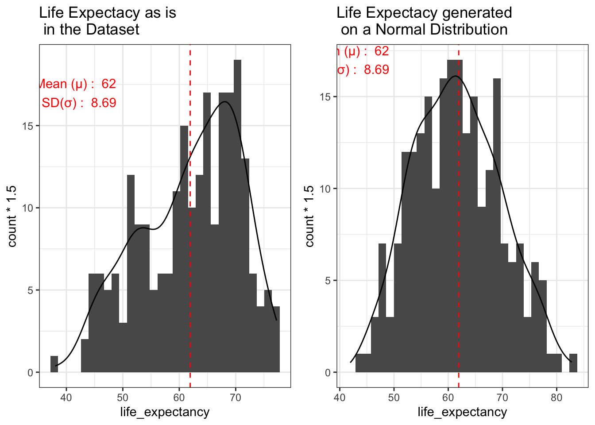
How do we do we obtain these graphs? Let us work on the first graph.
5.1 Working with the empirical (actual) data
Let us go back to the life expectancy dataset
Copy and paste the life expectancy dataset from Lab 4 or download it again. You can download the life expectancy dataset below:
5.2 Load the dataset
#Setting path
setwd("/Users/bgpopescu/Dropbox/john_cabot/teaching/stats/lab5/")
life_expectancy <- read.csv(file = './life-expectancy.csv')5.3 Calculating the mean
life_expectancy2<-life_expectancy%>%
group_by(Code, Entity)%>%
summarize(life_expectancy=mean(Life.expectancy.at.birth..historical.))`summarise()` has grouped output by 'Code'. You can override using the
`.groups` argument.5.4 Clearning the Data
weird_labels <- c("OWID_KOS", "OWID_WRL", "")
clean_countries<-subset(life_expectancy2, !(Code %in% weird_labels))5.5 Calculating the mean and SD in the dataset
mean_empirical<-mean(clean_countries$life_expectancy, na.rm = T)
mean_empirical_val<-as.character(round(mean_empirical, 0))
sd_empirical<-sd(clean_countries$life_expectancy, na.rm = T)
sd_empirical_val<-as.character(round(sd(clean_countries$life_expectancy, na.rm = T), 2))5.6 Creating annotation text
lines<- paste("Mean (\u03BC)", ": ", mean_empirical_val, "\n", "SD(\u03C3)", ": ", sd_empirical_val)5.7 Making the histogram for the dataset
y_coord<-17
fig_hist1<-ggplot(data = clean_countries, aes(x=life_expectancy))+
geom_histogram()+
geom_density(aes(y=..count..*1.5))+
theme_bw()+
geom_vline(xintercept=mean_empirical, linetype='dashed', col = 'red')+
ggtitle("Life Expectacy as is\n in the Dataset")+
annotate(geom="text",
x=mean_empirical-10,
y=y_coord,
label=lines,
#parse=T,
color="red")
fig_hist1`stat_bin()` using `bins = 30`. Pick better value with `binwidth`.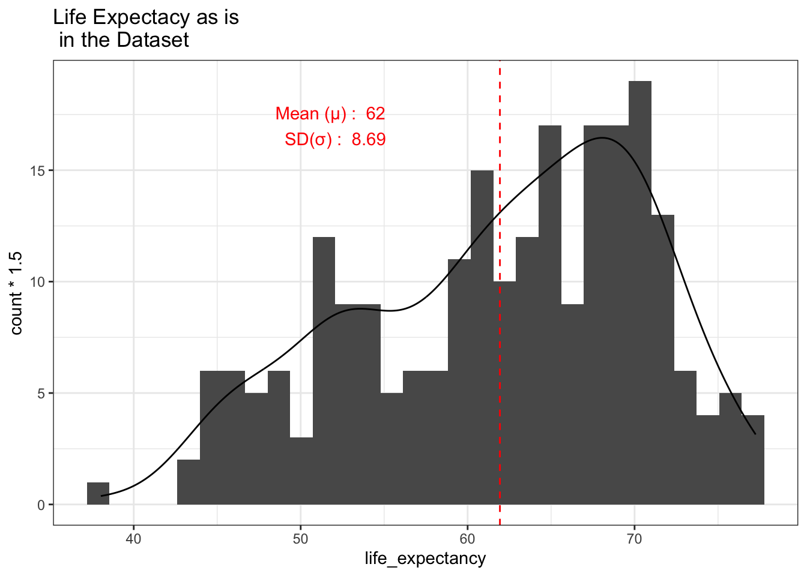
6 Working with the made-up (generated) data
6.1 Generating 235 observations following a normal distribution with same mean and standard deviation[235]
generated_data<-rnorm(235, mean=mean_empirical, sd=sd_empirical)
generated_data<-data.frame(generated_data)
names(generated_data)<-"life_expectancy"6.2 Making the histogram for the generated dataset
fig_hist2<-ggplot(data = generated_data, aes(x=life_expectancy))+
geom_histogram()+
geom_density(aes(y=..count..*1.5))+
theme_bw()+
geom_vline(xintercept=mean_empirical, linetype='dashed', col = 'red')+
ggtitle("Life Expectacy generated\n on a Normal Distribution")+
annotate(geom="text",
x=mean_empirical-10,
y=y_coord,
label=lines,
color="red")#Comparing the two histograms
grid.arrange(fig_hist1, fig_hist2, ncol=2)`stat_bin()` using `bins = 30`. Pick better value with `binwidth`.
`stat_bin()` using `bins = 30`. Pick better value with `binwidth`.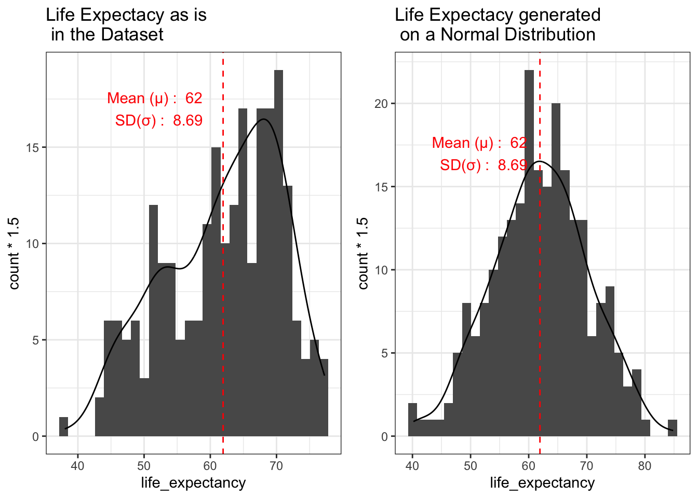
6.3 Generating more observations following a normal distribution with same mean and standard deviation
generated_data_1000obs<-rnorm(1000, mean=mean_empirical, sd=sd_empirical)
generated_data_1000obs<-data.frame(generated_data_1000obs)
names(generated_data_1000obs)<-"life_expectancy"6.4 Making the histogram for the generated dataset (1000 obs.)
fig_hist3<-ggplot(data = generated_data_1000obs, aes(x=life_expectancy))+
geom_histogram()+
geom_density(aes(y=..count..*1.5))+
theme_bw()+
geom_vline(xintercept=mean_empirical, linetype='dashed', col = 'red')+
ggtitle("Life Expectacy generated\n on a Normal Distribution\n 1000 Obs.")+
annotate(geom="text",
x=mean_empirical-10,
y=y_coord,
label=lines,
#parse=T,
color="red")
fig_hist3`stat_bin()` using `bins = 30`. Pick better value with `binwidth`.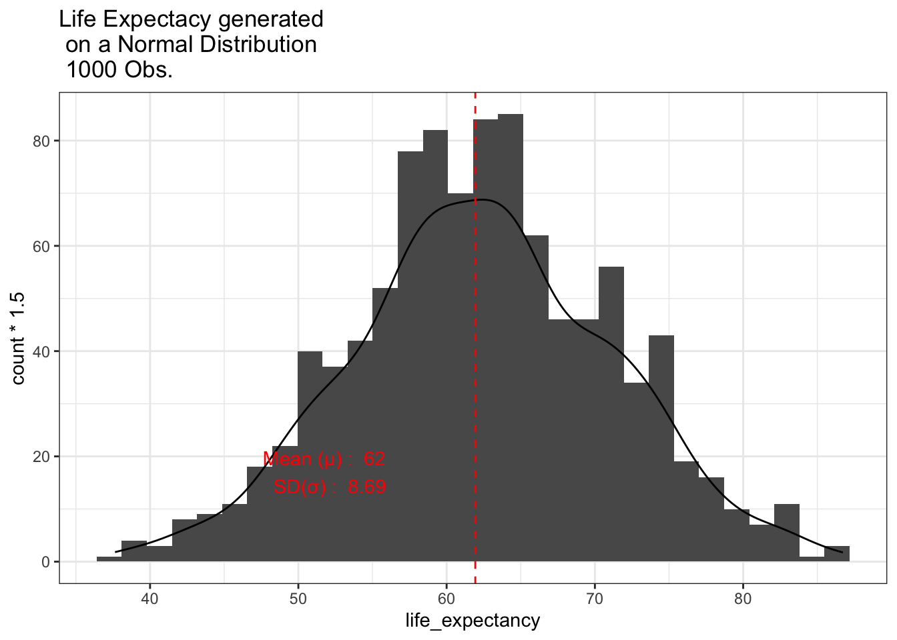
So, we can see that by having more observations, our dataset approaches something that looks like a normal distribution. Note that our mean \(\mu\) and standard deviation \(\sigma\) are the same as in the original data.
7 Problem
Let’s assume that the data in our original empirical dataset is normally distributed with the mean of 61.93 years and a standard deviation of 8.69 years.
7.1 Life expectancy of less than 50 years
What is the probability that a randomly selected country will have a life expectancy of less than 50 years?
ctry_50<-subset(life_expectancy2, life_expectancy<50)
ctry_50# A tibble: 30 × 3
# Groups: Code [28]
Code Entity life_expectancy
<chr> <chr> <dbl>
1 "" Africa 49.7
2 "" Least developed countries 49.8
3 "" Low-income countries 48.5
4 "AFG" Afghanistan 45.4
5 "AGO" Angola 45.1
6 "BDI" Burundi 47.4
7 "BEN" Benin 49.3
8 "BFA" Burkina Faso 46.5
9 "CAF" Central African Republic 46.3
10 "CIV" Cote d'Ivoire 48.5
# … with 20 more rowsnrow(ctry_50)/nrow(life_expectancy2)[1] 0.1171875#The probability that a randomly selected country will have a life expectancy of less than 50 years is 0.12.
Let us also visualize this probability. We will proceed by calculating the frequency table.
#Step1: Rounding the values
new_data2<-life_expectancy2
new_data2$life_expectancy_rounded<-round(new_data2$life_expectancy, 0)
head(new_data2, n=5)# A tibble: 5 × 4
# Groups: Code [1]
Code Entity life_expectancy life_expectancy_rounded
<chr> <chr> <dbl> <dbl>
1 "" Africa 49.7 50
2 "" Americas 66.8 67
3 "" Asia 59.2 59
4 "" Europe 69.0 69
5 "" High-income countries 73.9 74#Step2: Creating a frequency table
freq_table<-table(new_data2$life_expectancy_rounded)
freq_table
38 43 44 45 46 47 48 49 50 51 52 53 54 55 56 57 58 59 60 61 62 63 64 65 66 67
1 2 3 4 4 5 5 3 4 5 12 6 5 6 5 6 7 8 11 10 7 8 14 13 5 15
68 69 70 71 72 73 74 75 77
10 15 14 14 8 6 3 8 4 #Step3: Turning the table into a dataframe
freq_table<-data.frame(freq_table)#Step6: Providing more intuitive names
names(freq_table)[1]<-"life_expectancy_rounded"
names(freq_table)[2]<-"frequency"
names(freq_table)[1] "life_expectancy_rounded" "frequency" #Step7: Turning factor variables into numeric
freq_table$life_expectancy_rounded<-as.numeric(as.character(freq_table$life_expectancy_rounded))
str(freq_table)'data.frame': 35 obs. of 2 variables:
$ life_expectancy_rounded: num 38 43 44 45 46 47 48 49 50 51 ...
$ frequency : int 1 2 3 4 4 5 5 3 4 5 ...#Step8: Calculaing the PMFs
freq_table$sum_frequency<-sum(freq_table$frequency)
freq_table$pmf<-freq_table$frequency/freq_table$sum_frequency
head(freq_table, n=5) life_expectancy_rounded frequency sum_frequency pmf
1 38 1 256 0.00390625
2 43 2 256 0.00781250
3 44 3 256 0.01171875
4 45 4 256 0.01562500
5 46 4 256 0.01562500The next step is to create the CDF. A CDF tells us probability that the randomly generated variable X takes on a value less than or equal to x. We will be using the function that we created previously.
#Step9: Defining the function
EvalCdf <- function(t, x) {
count = 0.0
for (value in t){
if (value <= x){
count <- count+1
}
}
prob = count / length(t)
return(prob)
}#Step10: Making list of all rounded ages
list_all_ages_rounded<-new_data2$life_expectancy_roundedEvaluating the CDF and saving it to a list
#Step11: Evaluating the CDF
xsx<-cbind(sapply(new_data2$life_expectancy_rounded, function(x){
EvalCdf(list_all_ages_rounded, x)
}))Adding the list to the dataframe:
#Step12: Adding the list to the dataframe
new_data2$cdf <- xsx[,1]Plotting the CDS
#Step13: Plotting the CDS
figure_3<-ggplot()+
geom_step(data=new_data2, mapping=aes(x=life_expectancy_rounded, y=cdf)) +
geom_bar(stat="identity")+
theme_bw()
figure_3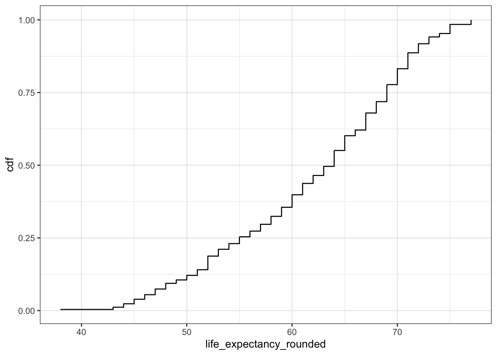
Merging the PMFs to the dataset
#Step14: Selecting only the relevant variables
freq_table_x<-subset(freq_table, select = c(life_expectancy_rounded, pmf))
head(freq_table_x, n=10) life_expectancy_rounded pmf
1 38 0.00390625
2 43 0.00781250
3 44 0.01171875
4 45 0.01562500
5 46 0.01562500
6 47 0.01953125
7 48 0.01953125
8 49 0.01171875
9 50 0.01562500
10 51 0.01953125#Step15: Performing the left join
new_data3<-left_join(new_data2, freq_table_x, by=c("life_expectancy_rounded" = "life_expectancy_rounded"))#Probability Density
fig4a<-ggplot(data=new_data3, mapping=aes(x=life_expectancy_rounded, y=pmf)) +
geom_area(fill = "green") +
gghighlight(new_data2$life_expectancy_rounded < 50)+
theme_bw()+
ggtitle("Probability Density")
fig4a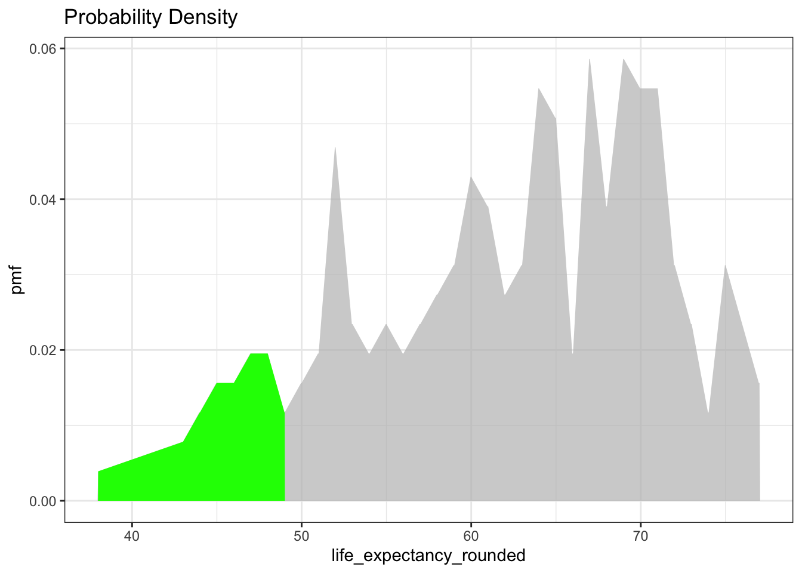
#Cumulative Probability
fig4b<-ggplot()+
geom_step(data=new_data2, mapping=aes(x=life_expectancy_rounded, y=cdf)) +
geom_area(fill = "green") +
geom_bar(stat="identity")+
theme_bw()+
ggtitle("Cumulative Probability")
#Cumulative Probability < 50
fig4c<-ggplot(data=new_data2, aes(x=life_expectancy_rounded, y=cdf)) +
geom_area(fill = "green") +
gghighlight(new_data2$life_expectancy_rounded < 50)+
theme_bw()+
ggtitle("Cumulative Probability")
grid.arrange(fig4a, fig4b, fig4c, ncol=3)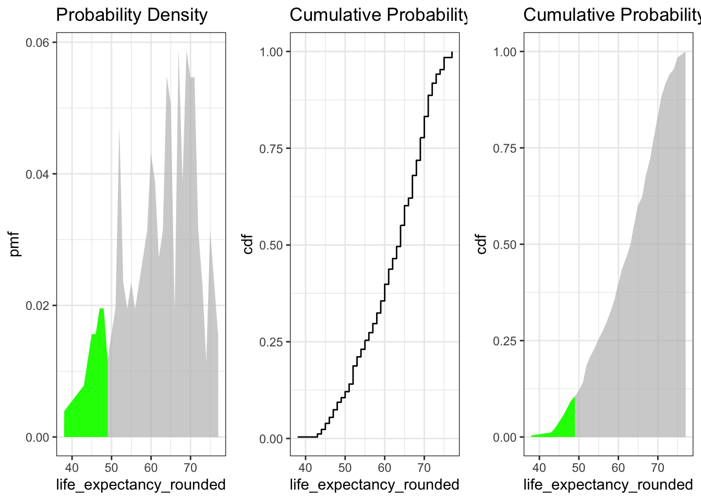
If our distribution was normal, it would look different:
It would look something like the following:
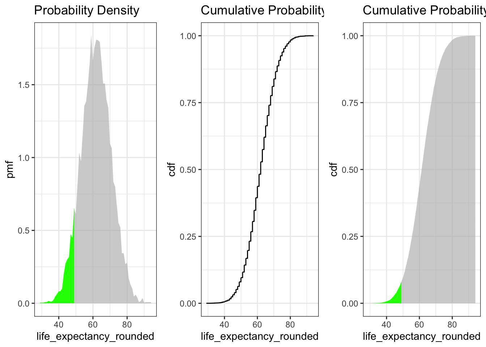
If we assume a normal distribution, we can simply get this answer this way:
res<-pnorm(50, mean = mean_empirical, sd = sd_empirical)
res[1] 0.08475828The probability of getting a country with a life expectancy of less than 50 is 0.12, if we assume a normal distribution.
7.2 Life expectancy of more than 70 years
What is the probability that a randomly selected country will have a life expectancy of more than 70 years?
So remember that the CDF is the probability that the randomly generated variable X takes on a value LESS than or equal to x. We will first subset the data to less than 70 and take the complement.
prob_more_70<-subset(new_data2, life_expectancy_rounded<70)
1-max(prob_more_70$cdf)[1] 0.2226562Therefore, probability of getting a country with a life expectancy of greater than 70 is 0.22.
If we assume a normal distribution, we can simply get a similar answer this way:
res<-pnorm(70, mean = mean_empirical, sd = sd_empirical)
1-res[1] 0.1765817Here is what it looks like
fig4b<-ggplot()+
geom_step(data=new_data2, mapping=aes(x=life_expectancy_rounded, y=cdf)) +
geom_area(fill = "green") +
geom_bar(stat="identity")+
theme_bw()
fig4c<-ggplot(data=new_data2, aes(x=life_expectancy_rounded, y=cdf)) +
geom_area(fill = "green") +
gghighlight(new_data2$life_expectancy_rounded > 70)+
theme_bw()
grid.arrange(fig4b, fig4c, ncol=2)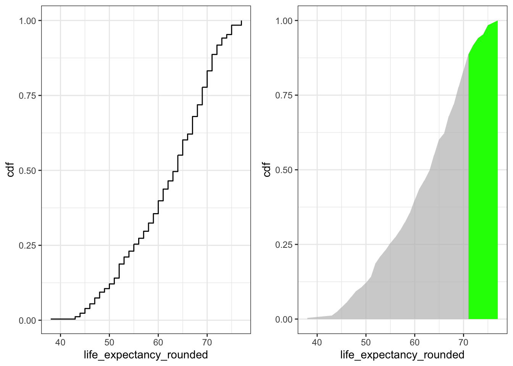
7.3 Percentile
What is the 90th percentile of life expectancy?
We can obtain this by - ordering the ages and calculate the percentile - subset based on CDF and get the minimum
list_ages<-new_data2$life_expectancy_rounded
list_ages<-list_ages[order(list_ages)]
quantile(new_data2$life_expectancy_rounded, c(0.90))90%
72 pct_90<-subset(new_data2, cdf>0.9)
#pct_90
min(pct_90$life_expectancy_rounded)[1] 72The 90th percentile of life expectancy is 72.
If we assume a normal distribution, we can also use qnorm. This generates a vector for the inverse cumulative distribution function of the normal distribution with a mean \(\mu\) and a standard deviation \(\sigma\). It is not exactly the same, but it is close.
res<-qnorm(0.9, mean = mean_empirical, sd = sd_empirical)
res[1] 73.06729